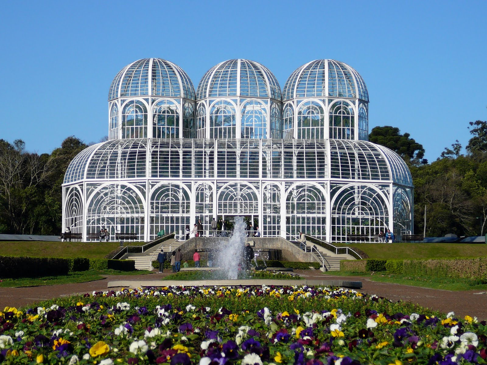

sobre o jardim botânico
O Jardim Botânico de Curitiba é um dos pontos turísticos mais famosos do Paraná e um símbolo da capital paranaense. Inaugurado em 5 de outubro de 1991, o local foi criado para promover a preservação da natureza, a pesquisa científica e a educação ambiental. Sua principal atração é a estufa de vidro, inspirada nos jardins franceses do século XIX, que abriga diversas espécies de plantas da Mata Atlântica. Além da estufa, o Jardim Botânico possui amplos jardins geométricos, trilhas, lagos, espaços para caminhadas e o Museu Botânico Municipal, que reúne uma das maiores coleções de plantas do Brasil. O ambiente é ideal para quem busca contato com a natureza, lazer ao ar livre e momentos de tranquilidade. Todos os anos, milhares de turistas visitam o Jardim Botânico para apreciar sua beleza, tirar fotografias e conhecer um pouco mais sobre a biodiversidade do Paraná. O local representa a união entre natureza, ciência, cultura e preservação ambiental, tornando-se um dos maiores patrimônios de Curitiba e um dos destinos mais importantes do estado.
fatos
O Jardim Botânico de Curitiba é um dos principais símbolos do Paraná e um dos pontos turísticos mais visitados do Brasil. Conhecido por sua bela estufa de vidro, seus jardins bem cuidados e sua grande diversidade de plantas, o local representa a união entre natureza, ciência e preservação ambiental. Neste site, você encontrará informações sobre a história do Jardim Botânico, suas principais atrações, sua importância para a conservação da biodiversidade e curiosidades que fazem desse espaço um patrimônio da cidade de Curitiba. O objetivo é apresentar um dos lugares mais importantes do estado e incentivar a valorização da natureza e da cultura paranaense.

curiosidades
O Jardim Botânico é um espaço criado para preservar plantas, árvores e outros elementos da natureza. Além de ser um lugar de lazer e contato com o meio ambiente, também ajuda na educação ambiental e na pesquisa científica. Um dos jardins botânicos mais conhecidos do Brasil é o Jardim Botânico de Curitiba, no Paraná. Ele foi inaugurado em 1991 e se tornou um dos principais pontos turísticos da cidade. Seu principal cartão-postal é a estufa de vidro, inspirada no estilo arquitetônico de palácios europeus. O Jardim Botânico de Curitiba possui jardins com diferentes espécies de plantas, áreas para caminhada e espaços de preservação ambiental. O local também abriga o Museu Botânico Municipal, que possui uma importante coleção de plantas e materiais utilizados em pesquisas. Além de sua beleza, os jardins botânicos são importantes para a conservação da biodiversidade. Eles ajudam a proteger espécies vegetais e contribuem para que as pessoas conheçam melhor a importância das plantas para o equilíbrio do meio ambiente.